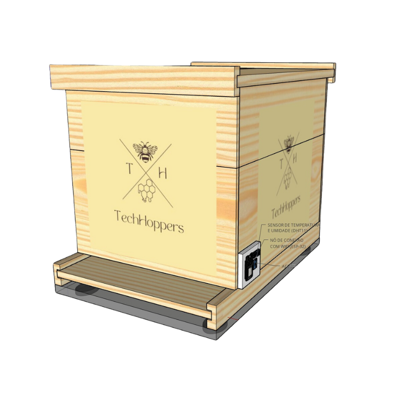

Colmeia Inteligente
Descrição:
A COLMEIA INTELIGENTE é mais do que um simples dispositivo, ela é a chave para um manejo apícola sustentável, lucrativo e eficiente. Nosso diferencial está em transformar dados em decisões, oferecemos insights em tempo real que permitem aos apicultores agir com precisão, evitar perdas e maximizar a produção de mel. A combinação de sensores e um software intuitivo significa que cada apicultor, independente do tamanho de sua operação, pode acessar um nível de controle e informação que antes era inacessível. Nosso sistema integra monitoramento completo com relatórios personalizados e acessíveis, com uma tecnologia fácil de usar, proporcionando uma experiência inédita. Os apicultores têm acesso a dados detalhados sobre suas colmeias, incluindo gráficos que mostram a produção ao longo do tempo, ajudando-os a identificar padrões sazonais e ajustar estratégias para maximizar a produtividade. Além disso, nossa solução não só protege as abelhas, mas também garante o manejo sustentável e eficiente.

Valor:
R$ 540,00
Detalhes:
Sensores como de temperatura, umidade, deslocamento, peso(balança) serão enviados.
Todos são auto instaláveis e devem ser acoplados em sua colmeia. Acompanhado de um manual de instalação.